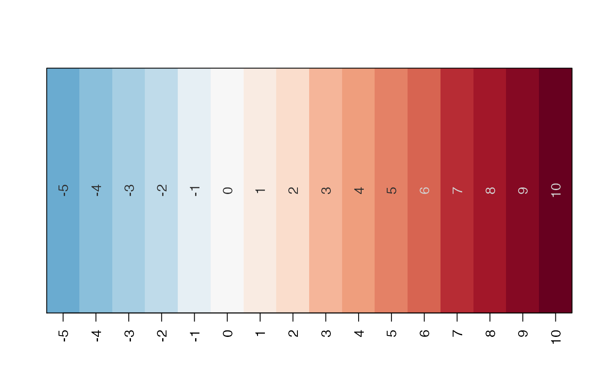
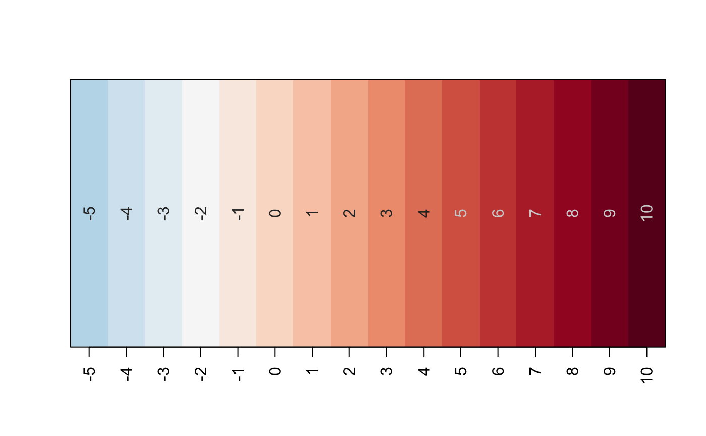
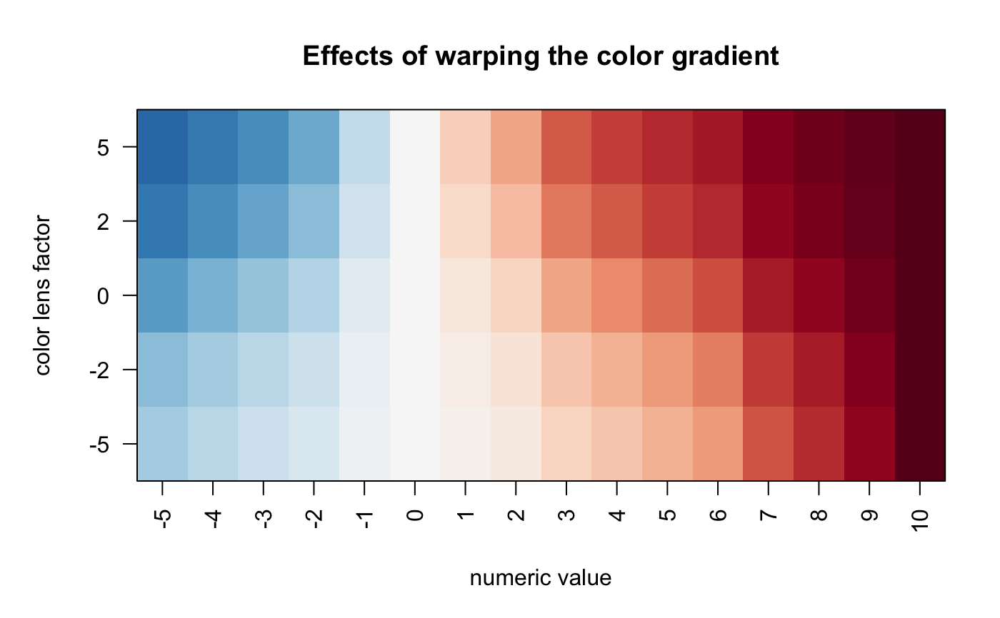

Apply color gradient to numeric values
vals2colorLevels( x, divergent = TRUE, col = "RdBu_r", defaultBaseColor = "#FFFFFF", lens = 0, numLimit = NULL, baseline = NULL, rampN = 25, verbose = FALSE, ... )
Arguments
| x | numeric vector |
|---|---|
| divergent | logical indicating whether the numeric values are divergent, by default baseline=0 will center the color ramp at zero. |
| col | color value compatible with the |
| defaultBaseColor | character color used as a base color when
a single color is supplied in |
| lens | numeric value sent to |
| numLimit | numeric value indicating the maximum numeric value,
where values in |
| baseline | numeric value indicating the minimum numeric value,
where values in |
| rampN | integer number of colors to define for the color gradient. Higher values define a smooth color gradient. |
| verbose | logical indicating whether to print verbose output. |
| ... | additional arguments are passed to |
Details
This function is similar to several other existing R functions
that take a vector of numeric values, and apply a color gradient
(color ramp) to the numeric values. This function provides the ability
to warp the color ramp, for example using jamba::warpRamp() in order
to adjust the color gradient relative to the numeric range of the
data.
See also
Other jam color functions:
closestRcolor(),
color_pie(),
group2colors(),
jam_pal(),
matrix2heatColors(),
rainbowJam_v1(),
rainbowJam(),
scale_color_jam(),
scale_fill_jam(),
theme_jam()
Examples
# Start with an example numeric vector x <- jamba::nameVector(-5:10); showColors(vals2colorLevels(x));# decrease the number of gradient colors showColors(vals2colorLevels(x, rampN=15))# change the baseline showColors(vals2colorLevels(x, baseline=-2));# adjust the gradient using lens par("mar"=c(5,5,4,2)); imageByColors(rbindList(lapply(nameVector(c(-5,-2,0,2,5)), function(lens){ vals2colorLevels(x, rampN=25, lens=lens); })));title(ylab="color lens factor", xlab="numeric value", main="Effects of warping the color gradient");